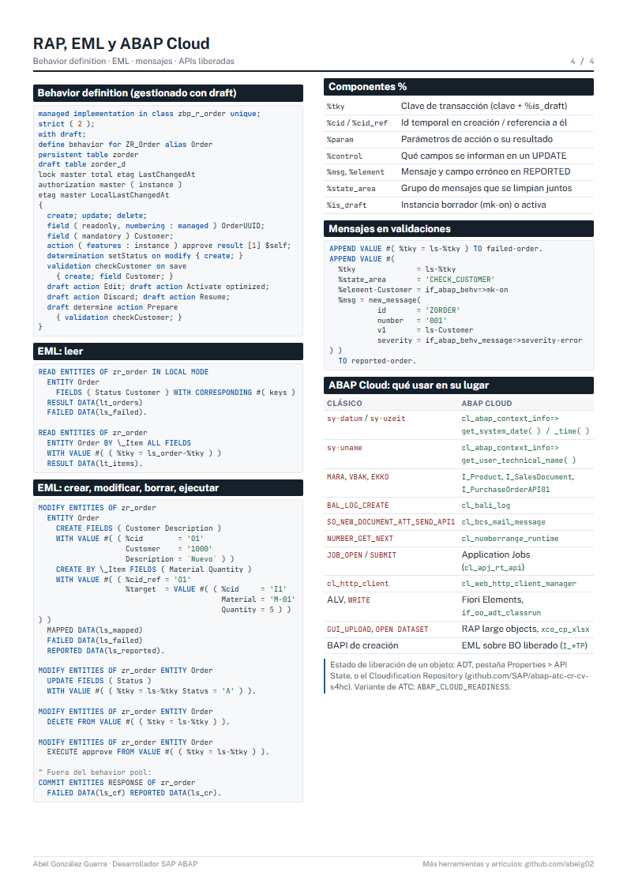

Recursos
Lo que tengo abierto en el navegador mientras desarrollo, y lo que recomendaría a quien empieza con ABAP Cloud.
PDF gratuito
Chuleta de ABAP moderno
Cuatro páginas para tener al lado del teclado: equivalencias entre la sintaxis antigua y la actual, expresiones de constructor (VALUE, CORRESPONDING, REDUCE, FILTER, COND), SQL estricto, tablas internas, EML de RAP y las APIs liberadas que sustituyen a los campos sy- y a las funciones más usadas.

Documentación oficial (gratis)
| ABAP Keyword Documentation | La referencia del lenguaje. La versión "ABAP Cloud" solo muestra lo permitido en Cloud. |
| ABAP cheat sheets | Repositorio de SAP con ejemplos ejecutables de cada tema, importable con abapGit. |
| Clean ABAP | La guía de estilo de SAP. Merece la pena leerla entera una vez. |
| SAP Business Accelerator Hub | Vistas CDS, BO de RAP y APIs liberadas de S/4HANA Cloud, con su documentación. |
| Cloudification Repository | Estado de liberación de cada objeto de SAP y su sucesor. Lo que consulta el ATC. |
| SAP Learning | Rutas de aprendizaje gratuitas sobre ABAP Cloud, RAP y extensibilidad clean core. |
| abapGit | Cliente git para ABAP. Imprescindible para versionar y compartir código. |
Libros
Los cuatro que más se citan en los equipos ABAP. Todos de SAP PRESS, en inglés.
ABAP RESTful Application Programming Model
La guía completa de RAP: escenarios gestionados y no gestionados, draft, EML y servicios. Para quien ya conoce ABAP y quiere entrar en RAP en serio.
SAP PRESSClean ABAP: A Style Guide for Developers
La guía de estilo de SAP explicada con ejemplos. Cambia la forma de escribir código en una semana.
Versión gratuita en GitHub · libro en SAP PRESSABAP to the Future
Recorrido práctico por todo lo nuevo del lenguaje y de las herramientas, con un tono muy ameno.
SAP PRESSCore Data Services for ABAP
Escrito por gente del equipo de CDS en SAP. La referencia para modelado, anotaciones y control de acceso.
SAP PRESS